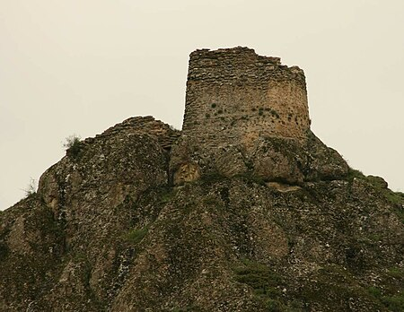

get to know georgia
ბირთვისი — ციხესიმაგრე ისტორიულ ქვემო ქართლში, ალგეთის ხეობაში (ახლანდელი თეთრიწყაროს მუნიციპალიტეტი). მდებარეობს ფარცხისის აღმოსავლეთით 6-7 კილომეტრზე. 2006 წლის 7 ნოემბერს, საქართველოს პრეზიდენტის ბრძანებულების თანახმად მიენიჭა ეროვნული მნიშვნელობის კულტურის უძრავი ძეგლის კატეგორია.
ციხისკენ მიმავალ გზას მივყავართ ვიწრო კარამდე. შიგნით, ხელოვნურად მოსწორებულ კლდეზე, პატარა ეზო იქმნება. აქედან იწყება ციხე. მაგრამ ბირთვისი არ არის ჩვეულებრივი ციხე, რომელსაც გალავანი და კოშკები შემოფარგლავს. აქ მაღლა აზიდულ მთებით შემოფარგლულ დიდ ტერიტორიაზე შემოსასვლელის დონის ქვემოთ კლდოვანი და წვეტიანი მთებია გაფანტული. აქედან, ამ წვეტიანი მთების ძირები ისე ღრმადაა, რომ ზემოდან ძლივს მოჩანს. ციხის ამგებს სწორედ ეს ბუნებრივი სიმაგრე შეურჩევიათ. ამის შემდეგ მათ დიდი მუშაობა ჩაუტარებიათ ყველა გასასვლელის და საეჭვო ადგილების ხელოვნურად გამაგრებისათვის. ყველა საჭირო ადგილი კედლითაა გადაკეტილი და თავდაცვისათვის მოწყობილი. შესასვლელთან მაღლობზე სათვალთვალო ცილინდრული კოშკი ე. წ. „შეუპოვარი“ დგას. რომლის კედლები სათოფეებითაა აღჭურვილი. ეს კოშკი, როგორც ეტყობა, გვიან პერიოდშია შექმნილი, მაგრამ სხვაგან გვხვდება გაცილებით უფრო ადრეული ფენები.
წყაროებში პირველად მოხსენიებულია XI საუკუნეში, როდესაც კლდეკარის ერისთავმა ლიპარიტმა და ქართლის ერისთავმა ივანე აბაზას ძემ შეიპყრეს თბილისის ამირა და ბირთვისი ჩამოართვეს. ბირთვისი აუღებელ ციხესიმაგრედ ითვლებოდა, მისი მფლობელი კი პოლიტიკურად ბატონობდა მთელს ალგეთის ხეობაზე. მაგრამ იგი გაცილებით ადრე უნდა იყოს წარმოქმნილი. მას სიმაგრის მნიშვნელობა XVIII ს. ბოლომდე არ დაუკარგავს და აუღებლად ითვლებოდა.